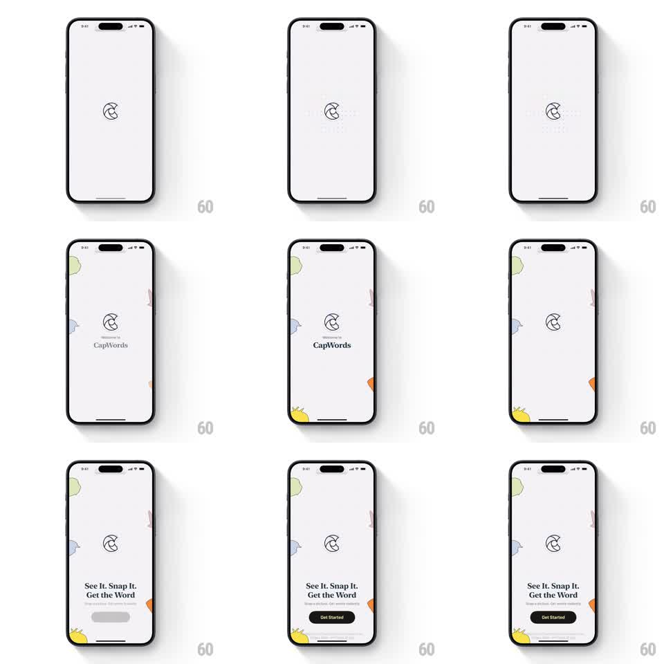

Media
Frame-by-frame

Rebuild this animation 1:1: CapWords' splash sequence - a minimal line-drawn logo scales up with a spring on a light gray screen, illustrated objects (avocado, strawberry, banana, chili) slide in from the edges, "Welcome to CapWords" fades in, then the logo shrinks as the tagline "See It. Snap It. Get the Word" and a black Get Started button stagger in.

Rebuild this animation 1:1: CapWords' splash sequence - a minimal line-drawn logo scales up with a spring on a light gray screen, illustrated objects (avocado, strawberry, banana, chili) slide in from the edges, "Welcome to CapWords" fades in, then the logo shrinks as the tagline "See It. Snap It. Get the Word" and a black Get Started button stagger in. ## Integration Integration: stack-agnostic spec - springs given as stiffness/damping, timed motions as duration + curve; map every value to your framework and animation library of choice. ## Scene Light gray screen. Center: the CapWords line-art logo (a rounded CW monogram). Small illustrated objects peek in from the screen edges - avocado top-left, strawberry right edge, banana bottom-left, chili bottom-right. Text stages: "Welcome to CapWords" under the logo, then "See It. Snap It. Get the Word" with subcopy and a black Get Started button at the bottom. ## Motion spec Pattern: multi-stage splash with springy logo and edge-sliding illustrations. - The logo scales in from 0.6 with a spring (~280/15, overshoot to 1.08) and a draw-on of its stroke (600ms overlapping). - The illustrated objects slide in from their edges (translate 60pt -> 0, 350ms ease-out, 100ms stagger around the compass) and settle with a tiny bounce. - "Welcome to CapWords" fades in under the logo (250ms), holds 900ms. - The logo shrinks and moves up (scale 0.7, translateY -40pt, 300ms ease-in-out) as the welcome text fades out. - "See It. Snap It. Get the Word" fades up (250ms), then subcopy (200ms), then Get Started slides up (280ms ease-out). - The edge objects keep a slow ambient bob (translateY +/-3pt, 3s sine). ## Calibration - The illustrations enter from off-screen edges - they are decorative, never centered. - The transition from welcome to tagline is a handoff, not an overlap of both texts. ## Reduced motion Logo fades in, illustrations appear in place, text stages crossfade (250ms each). ## Don't miss - The objects are flat color illustrations with dark outlines - keep the storybook style. - Get Started is the only black element; everything else stays light.